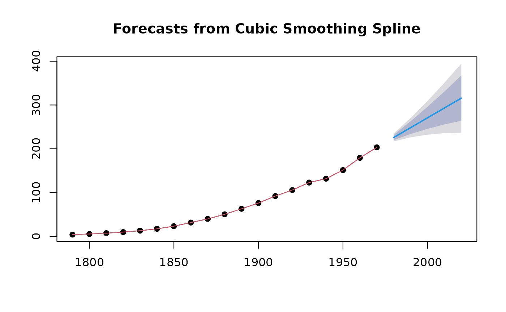

Returns local linear forecasts and prediction intervals using cubic smoothing splines.
splinef( y, h = 10, level = c(80, 95), fan = FALSE, lambda = NULL, biasadj = FALSE, method = c("gcv", "mle"), x = y )
| y | a numeric vector or time series of class |
|---|---|
| h | Number of periods for forecasting |
| level | Confidence level for prediction intervals. |
| fan | If TRUE, level is set to seq(51,99,by=3). This is suitable for fan plots. |
| lambda | Box-Cox transformation parameter. If |
| biasadj | Use adjusted back-transformed mean for Box-Cox transformations. If transformed data is used to produce forecasts and fitted values, a regular back transformation will result in median forecasts. If biasadj is TRUE, an adjustment will be made to produce mean forecasts and fitted values. |
| method | Method for selecting the smoothing parameter. If
|
| x | Deprecated. Included for backwards compatibility. |
An object of class "forecast".
The function summary is used to obtain and print a summary of the
results, while the function plot produces a plot of the forecasts and
prediction intervals.
The generic accessor functions fitted.values and residuals
extract useful features of the value returned by splinef.
An object of class "forecast" containing the following elements:
A list containing information about the fitted model
The name of the forecasting method as a character string
Point forecasts as a time series
Lower limits for prediction intervals
Upper limits for prediction intervals
The confidence values associated with the prediction intervals
The original time series (either object itself or the time
series used to create the model stored as object).
One-step forecasts from the fitted model.
Smooth estimates of the fitted trend using all data.
Residuals from the fitted model. That is x minus one-step forecasts.
The cubic smoothing spline model is equivalent to an ARIMA(0,2,2) model but with a restricted parameter space. The advantage of the spline model over the full ARIMA model is that it provides a smooth historical trend as well as a linear forecast function. Hyndman, King, Pitrun, and Billah (2002) show that the forecast performance of the method is hardly affected by the restricted parameter space.
Hyndman, King, Pitrun and Billah (2005) Local linear forecasts using cubic smoothing splines. Australian and New Zealand Journal of Statistics, 47(1), 87-99. https://robjhyndman.com/publications/splinefcast/.
Rob J Hyndman
#> #> Forecast method: Cubic Smoothing Spline #> #> Model Information: #> $beta #> [1] 0.0006859 #> #> $call #> splinef(y = uspop, h = 5) #> #> #> Error measures: #> ME RMSE MAE MPE MAPE MASE #> Training set 0.7704553 4.572546 3.165298 -0.6110405 8.174722 0.04536795 #> ACF1 #> Training set -0.4363661 #> #> Forecasts: #> Point Forecast Lo 80 Hi 80 Lo 95 Hi 95 #> 1980 225.6937 219.8454 231.5419 216.7496 234.6378 #> 1990 248.1814 233.7246 262.6382 226.0717 270.2912 #> 2000 270.6692 245.5023 295.8361 232.1798 309.1586 #> 2010 293.1569 255.5241 330.7897 235.6025 350.7113 #> 2020 315.6447 264.0068 367.2826 236.6713 394.6181